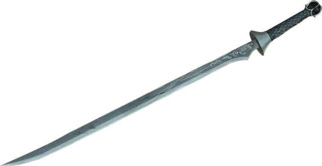

Лунный клинок
Moonblade
Оружие (Двуручный меч, Длинный меч, Короткий меч, Рапира или Скимитар), легендарное (требуется настройка существом по выбору клинка)

Рекомендованная стоимость 200 000 ЗМ
Среди всех созданных эльфами магических предметов Лунный клинок — один из самых ценных и тщательно охраняемых. В древние времена почти все знатные эльфийские дома имели такое оружие. По прошествию столетий некоторые из этих клинков исчезли из мира — их магия угасла вместе с эльфийскими родословными, другие пропали вместе со своими носителями во время великих путешествий; и теперь остаётся лишь несколько таких клинков.
Каждый Лунный клинок стремится к носителю, чьё мировоззрение и цели совпадают с его собственными. Если вы попытаетесь настроиться на Лунный клинок, который не желает вас в качестве носителя, оружие не только отвергнет вас, но и наложит на вас проклятие: вы будете совершать Тесты к20 с Помехой в течение 24 часов или пока проклятие не будет снято заклинанием Снятие проклятия или аналогичной магией. Если вы попытаетесь настроиться на клинок, и тот принимает вас, вы мгновенно становитесь настроенным на оружие, и на нём появляется новая руна. Вы остаётесь настроенным на оружие до своей смерти или уничтожения клинка. Для всех, кроме избранного носителя, Лунный клинок функционирует как немагическое оружие соответствующего вида.
Лунный клинок несёт по одной руне за каждого носителя, которому он с желанием служил (обычно 1к6 + 1 рун). Первая из рун дарует бонус +1 к броскам атаки и урона, совершаемым с этим магическим оружием. Каждая руна помимо первой даёт Лунному клинку новое свойство. ДМ выбирает это свойство или определяет его случайным образом, бросая на таблице свойств Лунного клинка.
Малое свойство. Помимо перечисленных свойств, у каждого Лунного клинка есть малое свойство, определяемое броском на таблице малых свойств магических предметов.
Разумность. Лунный клинок — это разумное оружие (Интеллект 12, Мудрость 10, Харизма 12). Он обладает Тёмным зрением дальностью 120 футов и слышит в тех же пределах. Его мировоззрение совпадает с мировоззрением его создателя.
Оружие общается, передавая эмоции, вызывая покалывание в руке у держателя, когда хочет сообщить что-то, что ощутило. Оно может общаться через видения или сны, когда владелец находится в трансе или спит.
Личность. Лунный клинок обладает характером, схожим с характером его создателя. Как только клинок выбрал владельца, он считает, что только он должен им владеть, даже если мировоззрение владельца отличается от мировоззрения клинка или его цели впоследствии противоречат целям оружия.
Свойства Лунных клинков
| 1к100 | Свойство |
| 01–60 | Увеличивает бонус к броскам атаки и урона на 1, вплоть до +3. Перебросьте, если клинок уже имеет бонус +3. |
| 61–75 | При попадании атакой Лунным клинком вы наносите 1к6 дополнительного Силового урона. Каждый раз, когда клинок получает это свойство после первого раза, этот дополнительный урон увеличивается на 1к6, вплоть до 3к6. Перебросьте, если дополнительный Силовой урон этого свойства клинка уже равен 3к6. |
| 76–80 | Лунный клинок приобретает свойство Метательное (нормальная дистанция 20 футов, максимальная 60 футов). Каждый раз, когда вы метаете оружие, после атаки оно летит обратно в вашу руку. |
| 81–85 | Лунный клинок наносит Критическое попадание, если на к20 атаки выпадает 19 или 20. |
| 86–95 | Вы можете Бонусным действием заставить Лунный клинок ярко вспыхнуть. Каждое существо в пределах 30 футов от вас, не находящееся за Полным укрытием, должно преуспеть в спасброске Телосложения Сл 15, иначе получит состояние Ослеплённый на 1 минуту. Существо повторяет спасбросок в конце каждого своего хода, при успехе оканчивая на себе этот эффект. Вы не можете использовать это свойство снова, пока не завершите Короткий или Долгий отдых. |
| 96–99 | Лунный клинок обладает свойствами Кольца хранения заклинаний. |
| 00 | Вы можете действием Магия призвать призрачное существо, выглядящее как теневой эльф, если у вас ещё нет такого слуги. Существо появляется в незанятом пространстве в пределах 120 футов от вас. Оно использует этот блок статистики. Вы управляете этим существом, решая, как оно действует и движется. Оно существует, пока его Хиты не опустятся до 0 или пока вы не отпустите его действием Магия. |